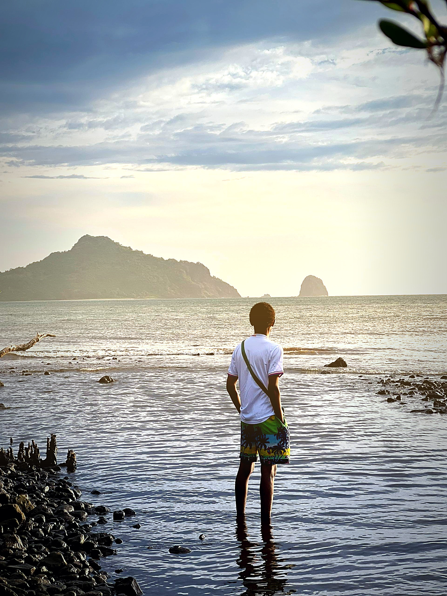

MoheliGoTRAVERSÉES MARITIMES DES COMORES
moheligo.com
ÎLOT DE NIOUMACHOUA · PARC MARIN DE MOHÉLI
MOHÉLI, À UNE

MOHÉLI, À UNE
TRAVERSÉE DE VOUS.
Deux minutes pour réserver votre place. Billet QR instantané, paiement MVola, météo mer sur 7 jours — et l'île est en face.
moheligo.comScannez le code, choisissez votre départ.
MoheliGo
Photo : Eldalil05 — îlot de Nioumachoua, Mohéli (CC BY-SA 4.0, Wikimedia Commons)